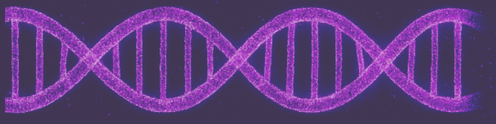

программа включает
Определение биологического возраста
Вы получите точное определение биологического возраста и
скорости старения каждой из 11 систем организма — от
сердечно-
сосудистой до нервной.
Оценка уровня рисков здоровья
На основе ваших персональных данных будет дана оценка
вероятности нарушений в каждой из 11 ключевых
биологических систем организма
Перечень причин ускоренного старения
Вы получите анализ персональных факторов, способствующих
ускоренному старению организма, с выявлением причин в каждой
системе.
Персональный план действий
Для вас будет разработан индивидуальный план по
снижению
рисков для здоровья и замедлению процессов
старения
Этапы прохождения
программы
1 ЭТАП
Без ожиданий и очередей, с VIP-сопровождением персонального менеджера на каждом этапе.
Прием врача
Сдача анализов
Диагностика
2 ЭТАП
-
Интерпретация результатов анализов с помощью ИИ
Обработка данных с использованием искусственного интеллекта — быстро, точно и без человеческого фактора.
-
Экспертная верификация и заключение
Результаты проверяют врачи-эксперты и составляют понятное заключение с персональным планом замедления старения
-
Полная расшифровка генома
Глубокий генетический анализ для выявления предрасположенностей, рисков и персонализированных рекомендаций.
3 ЭТАП
Встреча с врачом-экспертом
-
Презентация результатов и персональной книги с протоколом долголетия
Программа помогает
выявить скрытые
риски ускоренного
старения и вовремя
принять меры
Это инновационный инструмент, основанный на уникальном математическом алгоритме, который анализирует состояние вашего организма и прогнозирует возможные риски ускоренного старения биологических систем.
Данный продукт стал возможен за счет развития технологий ИИ и их внедрения в медицинскую практику
Искусственный интеллект выполняет расчеты по результатам анализа, а также строит модель прогнозирования рисков. Все этапы моделирования выполняются полностью персонализировано.
Все этапы моделирования выполняются индивидуально, с учетом ваших уникальных данных
ИИ выполняет расчеты по результатам анализа, а также строит модель прогнозирования рисков
Наши эксперты
Черемисина Анна Юрьевна
Кардиолог, Терапевт-
Образование
2002-2008 г. Казанский Государственный Медицинский Университет
-
Кандидат медицинских наук
Кандидатская диссертация на тему: «Сравнительный анализ суточного профиля артериального давления у больных гипертонической болезнью 1-2 стадии», Год защиты 2014
Максакова Светлана Александровна
Кардиолог, Терапевт-
Образование
1986 – 1992 г. Владивостокский Государственный Медицинский Институт
-
Повышение квалификации
Международный институт интегральной превентивной и антивозрастной медицины «PreventAge» - врач функциональной медицины
РУДН - иммунолог иммунология и аллергология, практическая трансфузиология
состав программы
Для Женщин
Консультации специалистов
- Первичный прием врача превентивной медицины
- Повторный прием врача превентивной медицины
Инструментальная диагностика
- УЗИ органов брюшной полости
- УЗИ почек и надпочечников
- УЗИ органов малого таза
- Эхокардиография
Лабораторные исследования
- Глюкоза (натощак)
- ЛПВП (хороший холестерин)
- ЛПНП (плохой холестерин)
- Общий холестерин
- С-реактивный белок (СРБ)
- Триглицериды
- Уровень амилазы
- Уровень бикарбонатов в крови
- Уровень билирубина
- Уровень глюкагона
- Уровень глюкозы (натощак)
- Уровень дофамина
- Уровень инсулина (натощак)
- Уровень кортизола (утренний)
- Уровень креатинина
- Уровень липазы
- Уровень печени (АЛТ, АСТ)
- Уровень серотонина
- Уровень тиреоидных гормонов (ТТГ)
- Уровень триглицеридов
- Уровень ферментов поджелудочной железы (амилаза, липаза)
- Уровень холестерина
- Фибриноген
- HbA1c (гликированный гемоглобин)
- Уровень тестостерона
- Генетическое тестирование (расширенная биохимия, диагностика анемий, нарушений липидного и углеводного обменов, гормональный фон, онкомаркеры, генетическая предрасположенность к заболеваниям и др.)
Для мужчин
Консультации специалистов
- Первичный прием врача превентивной медицины
- Повторный прием врача превентивной медицины
Инструментальная диагностика
- УЗИ органов брюшной полости
- УЗИ почек и надпочечников
- УЗИ органов малого таза
- Эхокардиография
Лабораторные исследования
- Глюкоза (натощак)
- ЛПВП (хороший холестерин)
- ЛПНП (плохой холестерин)
- Общий холестерин
- С-реактивный белок (СРБ)
- Триглицериды
- Уровень амилазы
- Уровень бикарбонатов в крови
- Уровень билирубина
- Уровень глюкагона
- Уровень глюкозы (натощак)
- Уровень дофамина
- Уровень инсулина (натощак)
- Уровень кортизола (утренний)
- Уровень креатинина
- Уровень липазы
- Уровень печени (АЛТ, АСТ)
- Уровень серотонина
- Уровень тиреоидных гормонов (ТТГ)
- Уровень триглицеридов
- Уровень ферментов поджелудочной железы (амилаза, липаза)
- Уровень холестерина
- Фибриноген
- HbA1c (гликированный гемоглобин)
- Уровень тестостерона
- Генетическое тестирование (расширенная биохимия, диагностика анемий, нарушений липидного и углеводного обменов, гормональный фон, онкомаркеры, генетическая предрасположенность к заболеваниям и др.)
Программа проходит в сети клиник